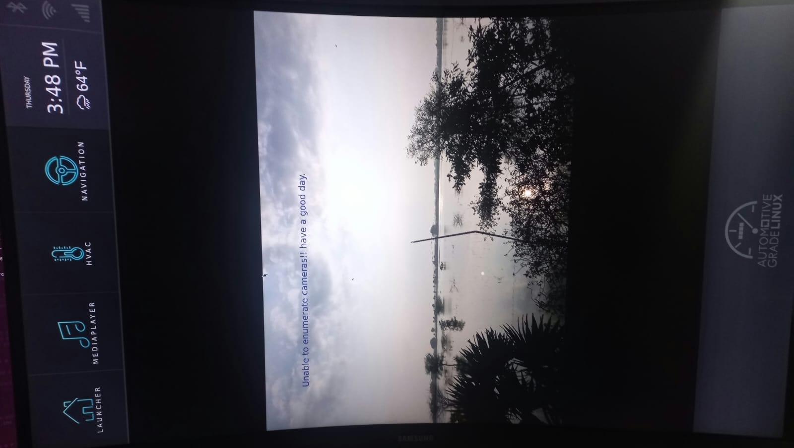
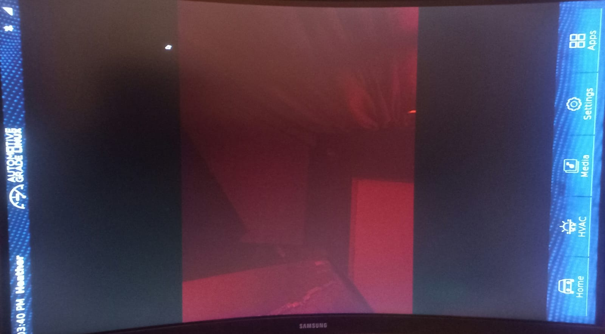
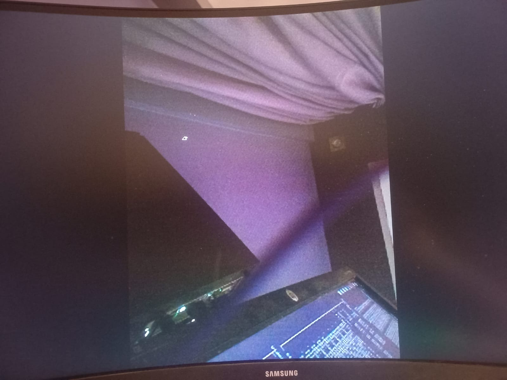

This week
f9474af (the scarthgap-compatible version of rpi camera support)
libcamera to PipeWire PACKAGECONFIG, which installs libspa-libcamera.so, the SPA plugin that connects PipeWire to the ISP-processed camera stream
S = "${WORKDIR}/git" and PROVIDES += "libcamera" to the rpi-libcamera recipe, resolving a silent SONAME mismatch that caused do_rootfs to fail
dtoverlay and devicetree overlay to the boot config, camera now auto-detected at boot
videoconvert to the camera-gstreamer GStreamer pipeline to fix color space conversion
Details
The first coding week had one concrete target: get the live OV5647 (Raspberry Pi Camera V1) feed
showing inside the camera-gstreamer app in the agl-ivi-demo-flutter image.
This app is part of AGL's IVI Flutter demo. It uses a native GStreamer pipeline
(pipewiresrc ! waylandsink) launched by the Flutter homescreen to display the camera feed.
On paper, the PR existed. In practice, nothing worked.
Meta-raspberrypi PR #1517
("raspberrypi5 camera support") by Joel Winarske introduces the rpi-libcamera recipe
(tip-of-tree RPi libcamera fork), rpicam-apps, and sets
PREFERRED_PROVIDER_libcamera = "rpi-libcamera" plus
PACKAGE_EXCLUDE:append = " libcamera" to prevent conflicts with the generic libcamera.
The PR was tested by Joel on plain Poky (not AGL), on a Raspberry Pi 5
(not Pi 4), using Camera V2/V3 sensors (imx477, imx219, imx708), and verified only
with rpicam-hello and rpicam-jpeg CLI tools, not through PipeWire streaming
to any app. This meant the PR was a solid foundation but not a complete solution for the AGL + Pi 4 +
OV5647 + Flutter use case.
The submodule bsp/meta-raspberrypi is checked out at commit f9474af.
This is important: the original PR commit on Joel's fork is 319a7a9, which has
LAYERSERIES_COMPAT_raspberrypi = "whinlatter", which is incompatible with AGL's scarthgap base.
The commit f9474af is the same camera changes rebased onto the agherzan repo with
LAYERSERIES_COMPAT_raspberrypi = "nanbield scarthgap", fully compatible with AGL.
PipeWire uses SPA (Simple Plugin API) plugins to interface with camera hardware. There are two relevant ones:
libspa-v4l2.so: talks directly to V4L2 kernel devices (e.g. /dev/video0 unicam). Delivers raw Bayer 10-bit data, unusable for display without ISP processing.libspa-libcamera.so: talks through libcamera, which runs the BCM2835-ISP to produce processed YUV frames. This is what you need for an RPi camera.
The AGL PipeWire recipe (meta-agl/meta-pipewire/recipes-multimedia/pipewire/pipewire_1.%.bbappend)
had gstreamer v4l2 wireplumber in its PACKAGECONFIG but was missing
libcamera. Without it, libspa-libcamera.so is never compiled or installed.
The fix: one word added to the last line of PACKAGECONFIG:
PACKAGECONFIG:class-target = "\
${@bb.utils.contains('DISTRO_FEATURES', 'bluez5', 'bluez', '', d)} \
${@bb.utils.contains('DISTRO_FEATURES', 'alsa', 'alsa pipewire-alsa', '', d)} \
${@bb.utils.contains('DISTRO_FEATURES', 'agl-devel', 'sndfile pw-cat readline', '', d)} \
${@bb.utils.contains('DISTRO_FEATURES', 'systemd', 'systemd systemd-service', '', d)} \
gstreamer v4l2 wireplumber libcamera \
"
The rpi-libcamera recipe introduced by the PR had two bugs that prevented it from
working in an AGL build.
S = "${WORKDIR}/git"
The recipe fetches source via a git:// SRC_URI. When BitBake fetches a git repo,
it unpacks it into ${WORKDIR}/git. But S (the source directory variable)
defaults to ${WORKDIR}/${BPN}-${PV}, which doesn't exist for git fetches.
Without this line, the build fails trying to find source files that aren't there.
PROVIDES += "libcamera"
This was the more subtle bug. The PR already adds
PREFERRED_PROVIDER_libcamera ?= "rpi-libcamera" to rpi-default-providers.inc.
But PREFERRED_PROVIDER only has effect if the preferred recipe actually declares it
provides the virtual name. Without PROVIDES += "libcamera" in the
rpi-libcamera recipe, BitBake sees only the generic libcamera as satisfying
DEPENDS += "libcamera", silently ignores the preference, and compiles PipeWire against
generic libcamera 0.4.0 (SONAME: libcamera.so.0.4).
At image assembly time, the generic libcamera package is excluded by
PACKAGE_EXCLUDE:append = " libcamera", and only rpi-libcamera 0.5.2 is present
(SONAME: libcamera.so.0.5). The result is a do_rootfs DNF failure:
Error:
Problem: package packagegroup-pipewire-1.0-r0.noarch requires pipewire-spa-plugins-meta,
but none of the providers can be installed
- pipewire-spa-plugins-meta-1.0.9-r0.aarch64 requires pipewire-spa-plugins-libcamera,
but none of the providers can be installed
- pipewire-spa-plugins-libcamera-1.0.9-r0.aarch64 requires libcamera.so.0.4()(64bit),
but none of the providers can be installed
- libcamera-1:0.4.0-r0.aarch64 is filtered out by exclude filtering
ERROR: Task (agl-ivi-demo-flutter.bb:do_rootfs) failed with exit code '1'
Running bitbake -c cleanall pipewire alone doesn't fix it; PipeWire recompiles
but still links against generic libcamera because the PROVIDES line is still missing.
The fix is: add PROVIDES += "libcamera", then clean and rebuild PipeWire.
# In rpi-libcamera_0.5.2+rpt20250903.bb, after SRCREV:
S = "${WORKDIR}/git"
PE = "1"
PROVIDES += "libcamera"With PipeWire and libcamera correctly built, the camera feed still failed. The journalctl log showed why:
camera-gstreamer[762]: Using pipeline: pipewiresrc ! waylandsink
pipewire[413]: spa.v4l2: '/dev/video0' VIDIOC_REQBUFS Invalid argument
pipewire[413]: pw.port: state ready -> error (can't negotiate buffers on port)
pipewire[413]: pw.link: allocating -> error (can't negotiate buffers on port)
camera-gstreamer[762]: ERROR: stream error: can't negotiate buffers on port
camera-gstreamer[762]: Using pipeline: filesrc location=.../still-image.jpg \
! decodebin ! videoconvert ! imagefreeze ! waylandsink
The app tried pipewiresrc ! waylandsink, failed, then fell back to displaying a
static JPEG. The wpctl status output revealed the root cause:
Sources:
57. bcm2835-isp (V4L2)
65. unicam (V4L2) ← was default (*) — raw Bayer
* 81. ov5647 [libcamera]
Node 81 shows the asterisk (*) as default in this listing, but after the image was first
flashed, node 65 (unicam) had higher priority and was selected by pipewiresrc without
a target-object property. Unicam produces raw 10-bit Bayer data, so GStreamer's
waylandsink cannot display it, hence the negotiation failure.
The temporary fix was wpctl set-default <ov5647_node_id>. After reflashing the
corrected image, WirePlumber auto-configured the persistent default, confirmed in
wpctl status Settings section:
Default Configured Devices:
2. Video/Source libcamera_input._base_soc_i2c0mux_i2c_1_ov5647_36
With the pipeline working, the camera image appeared with a strong red tint.
rpicam-jpeg --nopreview -o /tmp/test.jpg produced correct colors, proving libcamera
and the ISP were fine. The problem was in the GStreamer pipeline.

The camera-gstreamer app (in meta-agl-demo) builds a pipeline:
pipewiresrc ! waylandsink
No color space conversion element between pipewiresrc and waylandsink.
The format negotiated between them was being misinterpreted. Adding videoconvert
forces an explicit conversion step and resolves the color channels correctly:
pipewiresrc ! videoconvert ! waylandsink
The exact change in app/main.cpp (camera-gstreamer, SRCREV 97faa830, line 737):
- snprintf(pipeline_str, sizeof(pipeline_str), "pipewiresrc ! waylandsink");
+ snprintf(pipeline_str, sizeof(pipeline_str), "pipewiresrc ! videoconvert ! video/x-raw,format=BGRx ! waylandsink");
This change was made directly in app/main.cpp of the camera-gstreamer source,
then rebuilt with bitbake -c compile -f camera-gstreamer.
A proper bbappend patch will be created in Week 2.

Challenges & learnings
Challenge
PR #1517 was never tested with AGL, PipeWire streaming, or a V1 camera. All three bugs were silent with no obvious error messages pointing to the root cause. Each required understanding a different layer of the stack (Yocto PROVIDES, PipeWire SPA plugins, WirePlumber policy).
Key learning
PROVIDES in BitBake is what makes PREFERRED_PROVIDER actually work. Without it, the provider preference is silently ignored even when the setting is present; the dependency resolver only sees what each recipe explicitly declares it provides.